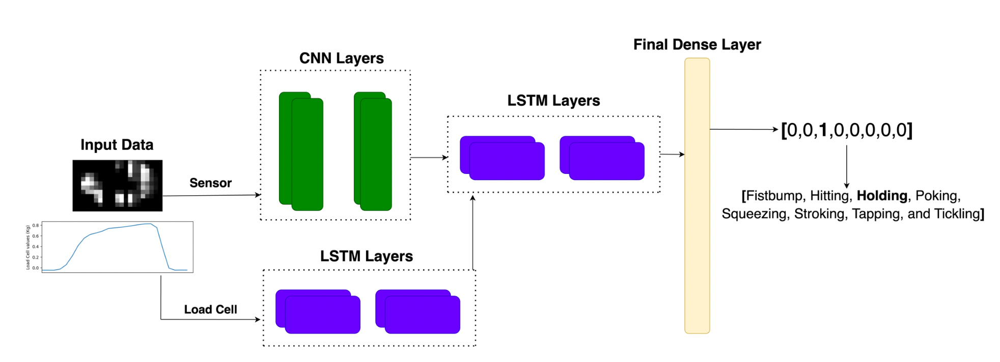
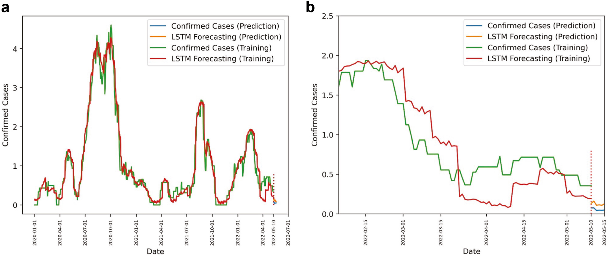
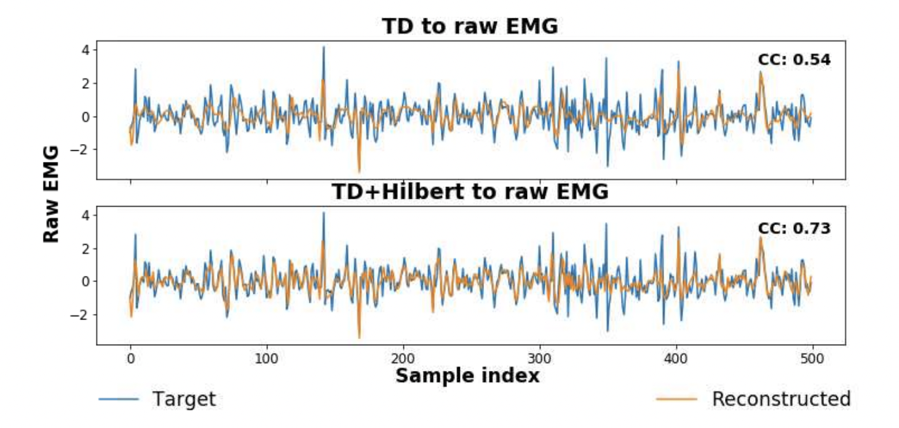
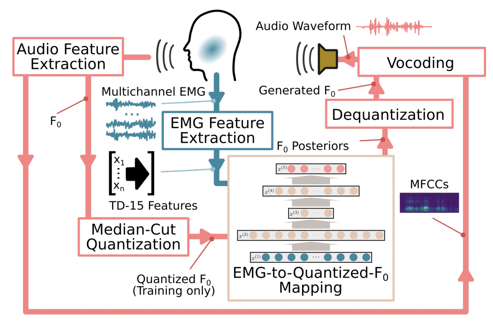

Dignity Health, Barrow Neurological Institute, Arizona, USA
Tasked with building end-to-end pipelines for patient data involving data storage, cleaning, processing, and maintenance. The research project involves analyzing epileptic patients’ brain activity when tasked with different emotional stimuli

Decision Theater, Tempe, Arizona, USA
Developed an LSTM time series forecasting model for predicting Valley Fever from weather data in Maricopa County, AZ. Achieved a low mean squared error (MSE), identifying optimal prediction windows upto 30 days. This project aims to help doctors and researchers predict patient load for each season, which helps prepare better for this disease

Robert Bosch Centre for Data Science & AI, India
Led a team of four to develop a lung tumor detection system using SVM and Random Forest, achieving 83% accuracy. Conducted feature analysis with random forest to identify top 10% tumor aggression features

Indian Institute of Science, India
Implemented a BLSTM model for speech-to-EMG (facial muscle signals) mapping, with the accuracy metric between the generated facial signals and the ground truth being 76%